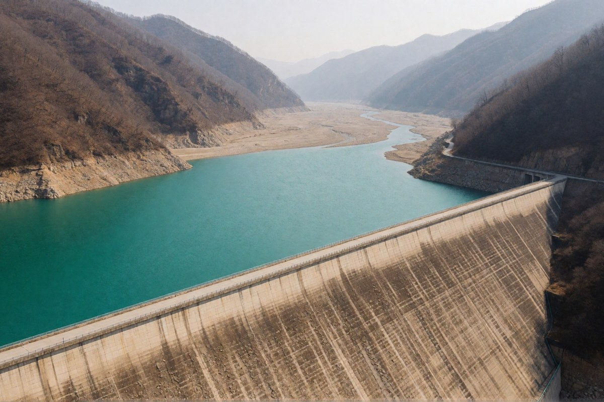

Geopolitica · 16 novembre 2026
Le dighe iraniane e le città dei missili: l'ipotesi del New York Times

Dighe e acquedotti costruiti dove l'acqua non sembrava servire potrebbero alimentare le basi sotterranee dei missili. È una lettura che non convince tutti, e che Teheran respinge.
di Franco Zanghì
In Iran ci sono dighe e acquedotti costruiti dove l'acqua non sembrava servire. Secondo alcuni analisti sentiti dal New York Times, quelle opere potrebbero servire alle basi sotterranee dei missili. Il giornale americano lo ha scritto lunedì 16 novembre e la notizia è stata ripresa da Al Jazeera, da Iran International e da Kurdistan 24. Il quotidiano la presenta come un'ipotesi, non come un fatto provato.
Da dove nasce l'ipotesi
Dai bombardamenti di quest'anno. La guerra di Stati Uniti e Israele contro l'Iran è cominciata il 28 febbraio, e in primavera gli aerei hanno colpito siti missilistici nascosti. Un esperto di sicurezza dell'acqua del Politecnico di Amburgo ha sovrapposto due mappe: quella delle almeno 533 dighe censite dal suo gruppo e quella dei raid. Le due, racconta, si somigliano molto, un semicerchio che scende da nord a sud.
Gli esempi sono due. Yazd, nel centro del Paese, colpita a marzo, dove arriva un grande acquedotto dai monti Zagros. E l'area protetta di Tarom, nella provincia di Hormozgan, colpita dagli americani il 14 luglio, non lontano da dove si ritiene ci sia una base sotterranea. Per un analista del Washington Institute i siti missilistici iraniani sono almeno 30, e per un ex analista dell'intelligence militare israeliana le dighe permetterebbero a Teheran di andare avanti anche sotto attacco.
Chi non è d'accordo
Kaveh Madani dirige l'istituto per l'acqua dell'Università delle Nazioni Unite ed è stato vicepresidente del Dipartimento dell'ambiente iraniano. Su Forbes scrive che una supposizione non è una prova e che stare vicini non vuol dire essere collegati: in Iran dighe, gallerie e basi stanno quasi tutte in montagna. E ricorda che le dighe sono protette in modo speciale dal diritto di guerra. Per il direttore della Bourse and Bazaar Foundation, un centro studi di Londra, meno di 50 delle oltre 500 grandi dighe iraniane producono energia: molte sono nate dagli appalti, comprese le imprese di costruzioni legate alle Guardie della rivoluzione, i Pasdaran.
La reazione di Teheran
Il portavoce del ministero degli Esteri iraniano, Esmaeil Baghaei, ha parlato di accuse infondate. Il presidente del Parlamento, Mohammad Bagher Ghalibaf, ha detto che quel servizio prepara il prossimo giro di attacchi contro le infrastrutture civili. Donald Trump, ricorda Al Jazeera, ha già minacciato di distruggere centrali elettriche e ponti iraniani.
Il punto
Una diga non è una base: è l'acqua e la corrente di milioni di persone, e le regole di guerra firmate anche dall'Italia la proteggono proprio per questo. Anche se l'ipotesi fosse vera, la differenza fra un Paese democratico e il regime di Teheran sta nel non trattare l'acqua di un popolo come un bersaglio. Il passaggio da guardare sono le prove: se arriveranno immagini o documenti che legano una diga a una base, l'ipotesi diventerà un caso; se no, resterà una coincidenza fra due mappe. E, se ci saranno nuovi attacchi, bisognerà vedere se terranno fuori l'acqua.
Fonti
- New York Times, l'inchiesta sulle dighe iraniane e le basi missilistiche, 16 novembre 2026, ripresa da Kurdistan 24 e Iran International
- Al Jazeera, la reazione del ministero degli Esteri e del Parlamento iraniano, 17 novembre 2026
- Forbes, l'intervento di Kaveh Madani sull'assenza di prove, 17 novembre 2026
Ipotesi di analisti, non un fatto accertato: alla data di pubblicazione non erano stati resi pubblici documenti o immagini che colleghino una diga a una base missilistica.